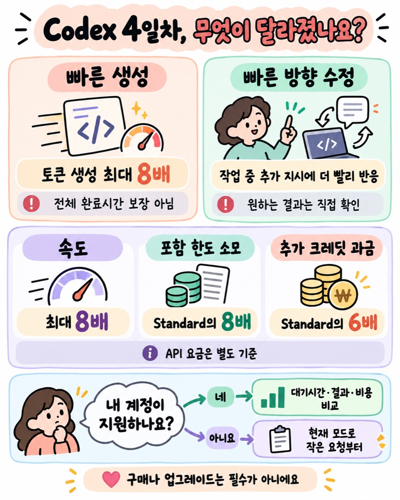
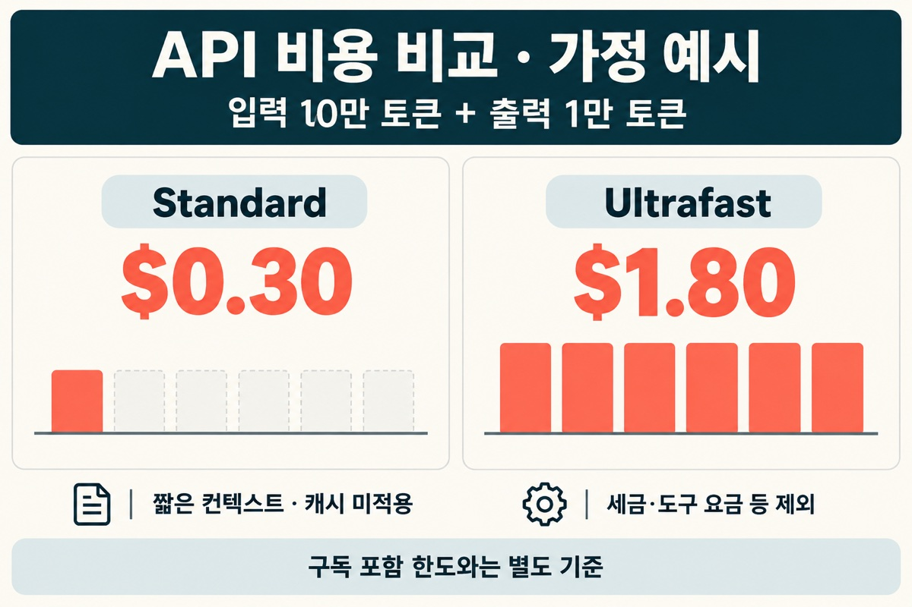
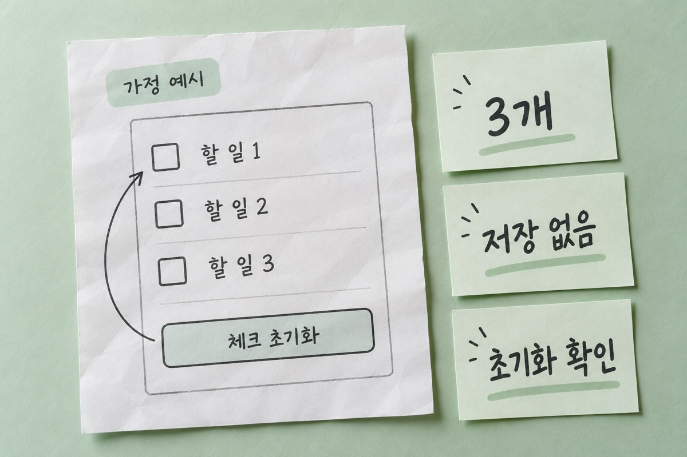
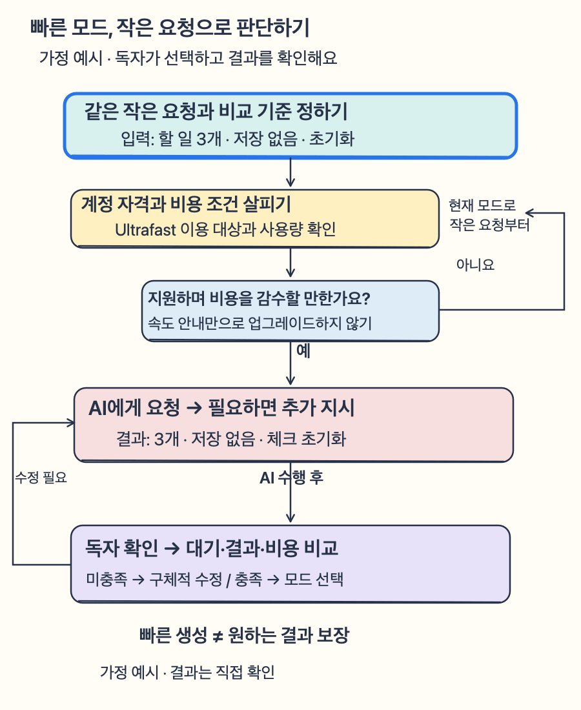

Codex 28일 업데이트 4일차 ⚡ ‘최대 8배’, 내 작업도 빨라질까요?
Codex로 작은 도구를 만들 때 답을 기다리는 시간이 아쉽다면, 4일차 업데이트에서 달라진 두 가지를 살펴보세요. 더 빠른 답변 생성과 작업 중 방향 수정이 핵심이지만, 전체 작업시간이 8분의 1로 줄어드는 건 아니며 이용 조건과 비용도 함께 봐야 해요.
이 포스팅은 쿠팡 파트너스 활동의 일환으로, 이에 따른 일정액의 수수료를 제공받습니다.
⏱️ 30초 요약
| 궁금한 점 | 먼저 알아둘 내용 |
|---|
| 새로 바뀐 것 | GPT-6.1 Sol Ultrafast 배포, 추가 지시 반영 속도 개선 |
| ‘최대 8배’의 뜻 | Sol Standard와 비교한 속도 안내, 전체 완료시간 보장 아님 |
| 내 계정에서는? | Pro 500달러·대상 Enterprise/Edu, 관리자 설정 조건 |
| 사용량과 비용 | 포함 한도는 8배로 소모, 추가 크레딧은 6배로 과금 |
API는 별도 토큰 요금이에요. 빠른 답변과 정확한 결과는 따로 판단해요.

1. 빨리 쓰기와 방향 바꾸기는 달라요 ⚡
AI에게 “할 일 목록을 만들어 줘”라고 시킨 뒤, 답이 길게 나오기 시작하면 기다리는 시간이 생겨요. 만들던 중 “항목은 세 개만, 저장 기능은 빼 줘”라는 생각이 들 수도 있죠. 이번 변화는 이런 두 종류의 기다림과 연결돼요.
4일차 목록에는 GPT-6.1 Sol의 Ultrafast 배포와 대화 방향을 더 빠르게 조정하는 개선이 함께 올라왔어요. 3일차의 화면·모델 접근과 저장형 리셋에 이어, 이번에는 생성 속도와 추가 지시 반영을 다룹니다.
Ultrafast는 같은 모델을 더 빠르게 쓰는 처리 방식이에요. OpenAI의 배포 안내는 Sol Standard 대비 최대 8배의 속도를 소개하고, 공식 변경 기록은 ‘토큰 생성’이 빨라진다고 설명해요. 토큰은 AI가 글을 읽고 쓰면서 처리하는 작은 조각으로, 한 글자나 한 단어와 항상 같지는 않아요.
‘최대 8배’는 파일 검사와 사람의 확인까지 포함한 작업 전체가 8배 빨라진다는 약속이 아니에요. 코딩 에이전트는 글을 쓰는 사이에 도구를 실행하거나 결과를 기다리기도 하니까요. API 문서도 연결을 매번 새로 만들면 네트워크 부담이 속도 개선을 줄일 수 있다고 설명합니다.
다른 변화인 steering은 ‘진행 중인 AI에게 방향을 다시 알려주기’예요. 새 기능이 처음 생겼다는 뜻보다는, 추가 지시에 더 빠르게 반응하도록 개선됐다는 설명입니다. “기존 화면은 유지하고 버튼 색만 바꿔 줘”처럼 무엇을 바꿀지 구체적으로 말하는 상황을 떠올리면 쉬워요.
추가 지시를 빨리 전달해도 이미 만들어진 결과가 모두 원하는 모습으로 고쳐졌다고 단정할 수는 없어요. 작업이 끝난 뒤 바꿔 달라고 한 부분과 그대로 두라고 한 부분을 나눠 보는 과정은 여전히 필요해요.
4일차 변경 목록 읽기 ↗
3일차 저장형 리셋과 비교하기 ↗
2. 내 계정의 한도와 API 요금을 구분해요 💳
Codex·ChatGPT Work에서 Ultrafast를 쓸 수 있는 대상은 Pro 500달러와 조건에 맞는 Enterprise·Edu 요금제예요. Enterprise는 기본적으로 꺼져 있어 관리자가 이용을 허용해야 합니다. 출시 시점의 다른 개인 요금제는 추가 크레딧을 구매해도 Ultrafast에 접근할 수 없다고 공식 문서에 안내돼 있어요.
여기서 ‘포함 한도’는 구독에 들어 있는 사용 가능량, ‘추가 크레딧’은 그와 별도로 쓰는 유료 사용량이에요. Ultrafast는 포함 한도를 Standard의 8배 비율로 쓰고, 구매한 크레딧과 Enterprise 종량제는 Standard의 6배 비율로 청구됩니다. Pro 500달러에서는 포함 사용량을 먼저 쓰고, 소진 후 이용 가능한 크레딧을 사용해요.
8배의 속도 안내, 8배의 포함 한도 소모, 6배의 추가 크레딧 비용은 서로 다른 기준이에요. ‘빨라졌으니 구독료만 같으면 마음껏 쓴다’고 이해하면 비용 판단이 어긋날 수 있어요. Codex와 ChatGPT Work는 사용량을 공유한다는 점도 함께 봐요.
API는 프로그램이 AI를 호출하는 연결 방식이에요. API 키로 이용하면 구독의 크레딧 배수가 아니라 입력·출력 토큰별 요금이 적용됩니다. 입력은 요청과 자료, 출력은 AI가 생성하는 답변에 해당해요.
아래는 GPT-6.1 Sol의 짧은 맥락 기본 API 요금을 같은 양으로 비교한 표예요. 단위는 토큰 100만 개당 미국 달러입니다.
| 처리 방식 | 입력 100만 토큰 | 출력 100만 토큰 |
|---|
| Standard | 2달러 | 10달러 |
| Ultrafast | 12달러 | 60달러 |
가령 입력 10만·출력 1만 토큰을 처리한다고 가정하면 Standard는 0.20+0.10=0.30달러, Ultrafast는 1.20+0.60=1.80달러예요. 실제 실행 비용을 측정한 결과가 아닌 계산 예시이며, 캐시·긴 맥락·지역 처리 할증·세금·별도 도구 비용은 제외했어요. 실제 요청의 조건과 양이 바뀌면 청구액도 달라집니다.

내 요금제의 속도·한도 조건 읽기 ↗
현재 API 요금표 확인하기 ↗
3. 작은 요청 하나로 쓸 이유를 판단해요 🧩
처음부터 큰 앱을 맡기기보다, 바꾸고 싶은 부분이 분명한 작은 도구를 기준으로 생각해 보세요. 다음은 기능 설명을 위한 가정 예시이며 실제 Codex 실행 결과가 아닙니다.
원래 요청은 “오늘 할 일 세 개를 체크할 수 있는 웹페이지를 만들어 줘”예요. 진행 중 추가 요청은 “브라우저에 저장하지 말고, 체크를 모두 해제하는 버튼만 넣어 줘”로 정해요. 목표 결과는 체크 항목 세 개와 초기화 버튼이 있는 페이지입니다.
확인할 차이는 간단해요. 저장 기능이 들어갔는지, 버튼을 누르면 체크가 풀리는지, 항목 수가 세 개인지를 봅니다. 추가 지시가 빨리 반영됐다는 느낌과 최종 결과가 조건을 지켰다는 판단을 이렇게 나눌 수 있어요.
이용 자격이 있고 비교해 볼 생각이라면, 작은 같은 요청을 Standard와 Ultrafast에 각각 맡겨 보세요. 답을 쓰는 대기와 도구 실행 대기, 수정 횟수, 최종 결과, 사용량을 따로 적으면 어떤 부분이 달라졌는지 이해하기 쉬워요. 요청 길이나 자료를 크게 바꾼 채 속도만 비교하면 기준이 달라져요.
기다리는 답변을 자주 고쳐야 하는 작업에서, 줄어든 대기의 가치가 늘어난 비용보다 큰지가 선택 기준이에요. 반복해서 화면을 다듬거나 긴급히 원인을 좁히는 상황이라면 빠른 반응을 비교할 이유가 있어요. 반면 작업 대부분이 외부 도구를 기다리는 시간이거나 결과 검토가 더 어렵다면, 빠른 생성만으로 문제가 해결되지는 않아요.
급하지 않은 첫 연습이라면 현재 쓸 수 있는 모드로 요청 범위를 작게 잡는 것부터 시작해도 좋아요. 빠른 모드를 쓰기 위해 요금제를 바꾸는 일이 필수는 아닙니다. 속도를 얻은 뒤에도 ‘무엇이 달라졌고, 원하는 대로 작동하는가’라는 마지막 판단은 직접 해야 해요.


API 속도 개선의 연결 조건 읽기 ↗
발표 기준: 공식 변경 기록은 2026년 10월 8일, 배포 안내의 한국 시각은 10월 9일 오전 3시 45분입니다. 이용 대상·요금은 변경될 수 있으므로 연결한 현재 문서가 기준이에요.